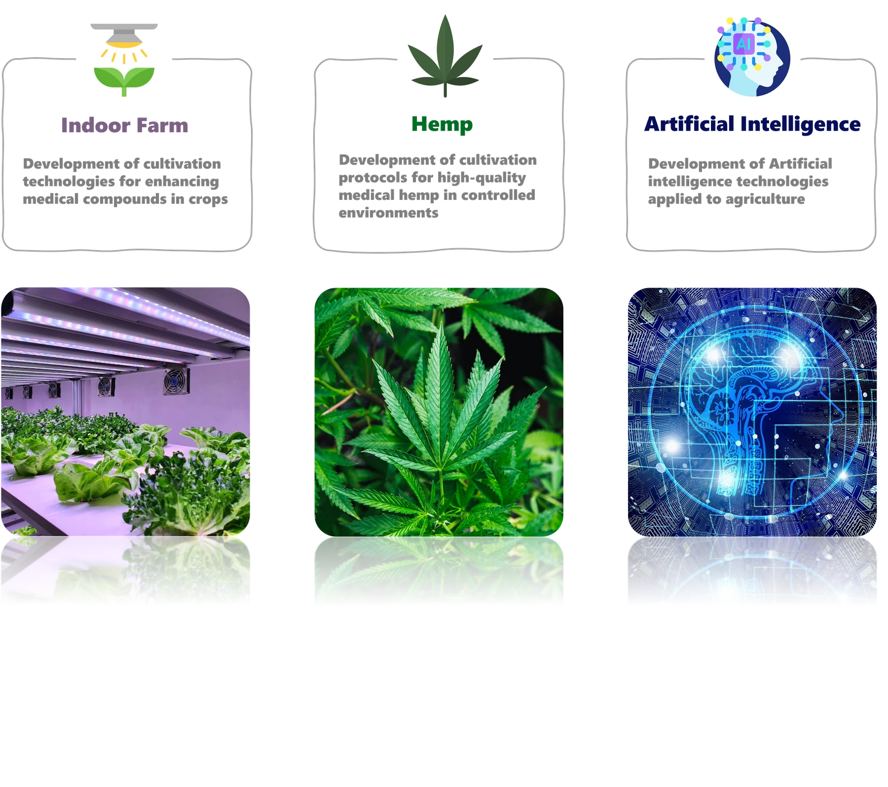

jongseok@cnu.ac.kr
Chungnam National University · Greenhouse & Environmental Horticulture Science Laboratory
Send emailPlant factory, smart farm, medicinal crops, sustainable water management, and AI-native cultivation systems.
충남대학교 Greenhouse & Environmental Horticulture Science Laboratory는 식물공장, 스마트팜, 기능성 작물, 환경반응, 데이터 기반 재배 제어를 연구합니다.
홈 화면 안에서만 이동하는 구조가 아니라, 각 메뉴가 별도 페이지로 이동하도록 바꾸고 핵심 연구 주제는 한 구역에 3개의 카드로 정리했습니다.
기존 ZIP 안에 있던 연구 토픽 이미지를 그대로 활용해 연구실의 주요 방향을 한눈에 볼 수 있게 배치했습니다.

Members, Projects, Publications는 각각 독립 페이지로 열리게 구성했고, 관리자 페이지도 공개 사이트와 같은 톤으로 맞췄습니다.
연구실 소개는 방문자용으로 깔끔하게 유지하고, 관리자 페이지에서는 멤버 추가, 졸업 처리, 논문 등록, 과제 상태 전환을 진행할 수 있습니다.
Chungnam National University · Greenhouse & Environmental Horticulture Science Laboratory
Send email이름, 과정, 이메일, 사진 업로드, 졸업 여부, 취업처, 논문 DOI, 과제 상태 변경까지 모두 관리자 페이지에서 다룰 수 있게 구성했습니다.
Open admin page